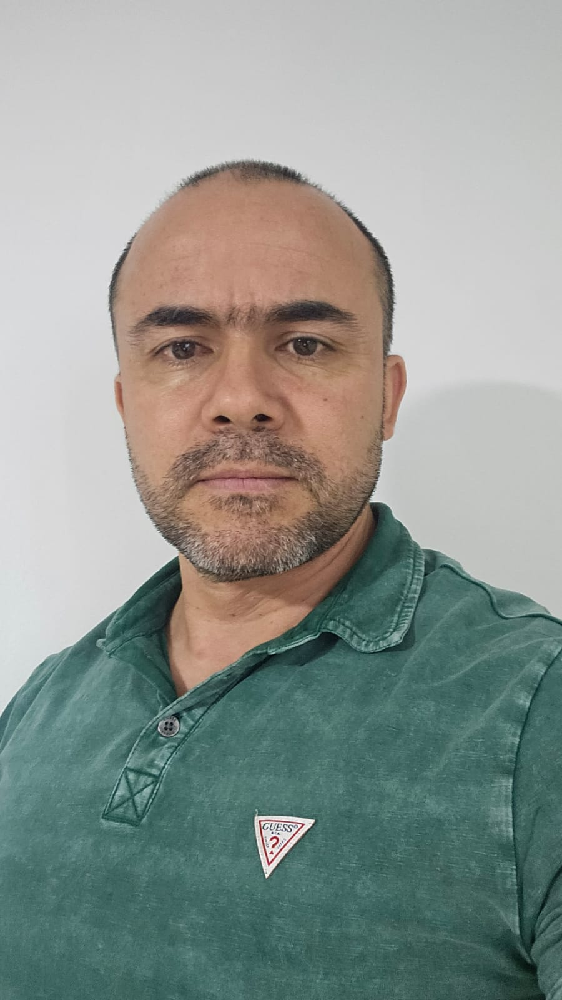

Curriculum Vitae

Leonel Sanchez Usma
Resumen
Trabajé durante 19 años en la Policía Nacional de Colombia,
donde logro el retiro en el grado de sargento, trabajo en la vigilancia especial e investigación criminal, ayudando
Con mi trabajo a la seguridad del país y las áreas en las que presté mis servicios, en la sección de Investigación criminal como investigador, me desempeño principalmente en casos relacionados con delitos sexuales, logrando varias capturas importantes.
Datos Personales
- Nombre: Leonel Sanchez Usma
- Lugar de Nacimiento: Manizales, Caldas, Colombia
- Fecha de Nacimiento: 22 de mayo de 1980
Formacion
Culmine mi bachilerato en el año 1996 en el Liceo Mixto Aranjuez en la ciudad de Manizales, Colombia en el año 2014-2015 hice tres semestres de ingenieria de sistemas en la Corporacion Universitaria Remington, con el ministerio de las TIC, realice un curso de programacion. Realice un bootcampo en Ditigal House, pero por motivos personales no pude culminar el curso en su totalidad.
Por lo anterior tengo conocimientos basicos en las aiguientes tecnologias:
- HTML
- CSS
- JAVASCRIPT
- PYTHON
He realizado cursos de programacion por inciativa propia en la plataforma Udemy
Portafolio